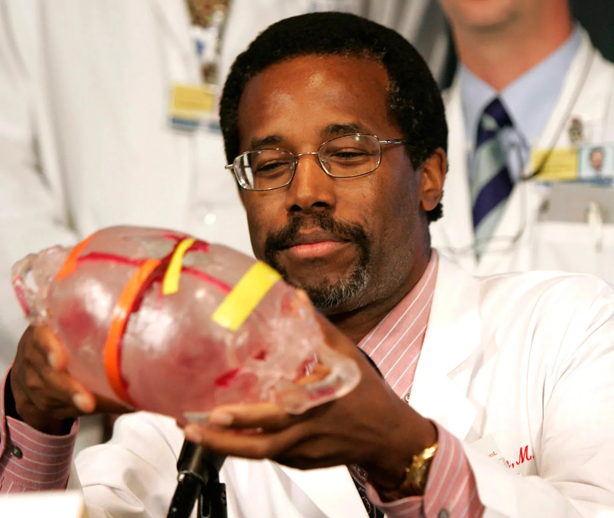

Ben Carson:
Um Defensor do Conhecimento e da Responsabilidade Pessoal

Ben carlson @ Jonhs Hopkins Children´s Center 2004
- 1951: Ben Carson nasceu em 18 de setembro em Detroit, Michigan, nos Estados Unidos. Ele cresceu em circunstâncias difíceis, enfrentando desafios econômicos e acadêmicos.
- 1960s-1970s: Durante sua infância e adolescência, Carson enfrentou dificuldades educacionais, mas com o apoio de sua mãe, ele desenvolveu um amor pela leitura e uma mentalidade de superação. Ele eventualmente se destacou academicamente.
- 1980s: Carson frequentou a Universidade Yale, onde se formou em psicologia. Mais tarde, ele frequentou a Faculdade de Medicina da Universidade de Michigan, onde se formou em neurocirurgia.
- 1984: Carson realizou a primeira separação bem-sucedida de gêmeos siameses unidos pela parte posterior da cabeça.
- 1987: Tornou-se o diretor mais jovem da neurocirurgia pediátrica no Hospital Johns Hopkins, em Baltimore, Maryland.
- 1997: Em uma cirurgia histórica, liderou uma equipe de 70 profissionais médicos na separação de gêmeos siameses unidos pela parte superior da cabeça. A operação foi complexa e bem-sucedida, tornando-o ainda mais conhecido no campo da neurocirurgia.
- 2008: Carson aposentou-se da medicina em tempo integral e, posteriormente, começou a se envolver em atividades filantrópicas e palestras motivacionais.
- 2015: Anunciou sua candidatura à presidência dos Estados Unidos pelo Partido Republicano, mas depois suspendeu sua campanha em março de 2016. Mais tarde, apoiou a candidatura de Donald Trump e serviu como secretário de Habitação e Desenvolvimento Urbano dos EUA em seu governo.
Ben Carson é conhecido por sua habilidade excepcional como neurocirurgião, realizando cirurgias pioneiras e complexas. Ele também se tornou um autor prolífico, escrevendo livros sobre sua vida, fé, superação e política.